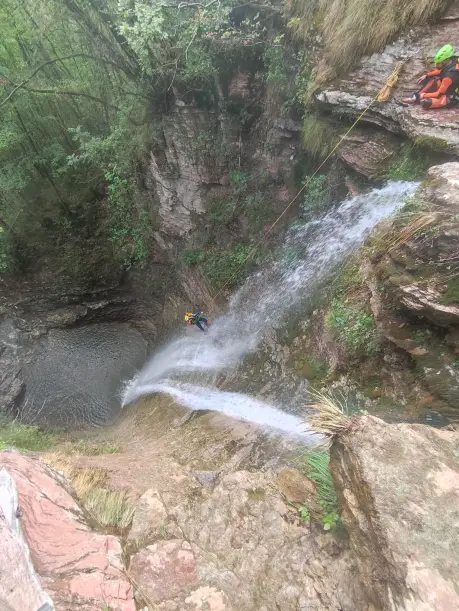

|
Pues nada, como todos los años, organizamos un viaje barranquero, este año a Dolomitas, en Italia. La verdad que de entrada la semana pintaba bastante mal, ya que daba lluvia prácticamente todos los días y la combinación de lluvia y barrancos ya sabemos que no es la mejor. Nos vamos en furgo y tardamos más de 20 horas en llegar, con parada para dormir en una triste área de servicio en dónde nos comen los mosquitos. Nuestro destino final es Nevegal, cerca de Belluno, y nada más llegar vemos que efectivamente los barrancos van cargaditos, pero esto no nos impide que al día siguiente empecemos con los descensos. Empezamos por el Val Maggiore (V3 A3 III), un sencillo pero bonito barranco ideal para empezar. Pirmer rapel: Una de las pozas donde podemos ver los magníficos estratos: Y cómo siempre, haciendo el tonto: Para el segundo día nos hicimos el Val Soffia (V5 A4 IV), junto con nuestro querido amigo Julián (el Pellejuli) y Gonzalo. El Soffia es un barrancazo que incluye de todo, saltos, toboganes, rápeles magníficos… Lo único malo, la aproximación, que es algo larga y con el calor en el pescuezo se hizo pesada. El barranco terminó con una tormenta que nos pilló por sorpresa casi al final y salimos por una senda que finalmente descubrimos que era la correcta para terminar el barranco. Rapel impresionante: Bajando a los "oscuros" Para el tercer día teníamos previsto escalar en las Tres cimas de Lavaredo, pero al llegar no nos dejaban subir en coche porque estaba supermasificado, así que esperamos para coger un autobús que nos subiera. Ya no había tiempo para escalar, así que lo dedicamos a dar una vuelta completa a las tres cimas. El tercer barranco que hicimos fue el Val Clusa (V4 A4 V), un espectacular barranco que no decepciona a nadie. Unos rápeles espectaculares con unas zonas cerradas magníficas, todo un placer para los sentidos. Otro rapel impresionante: Y cómo siempre... Para el último barranco escogemos el Zemola (V4 A4 V), que nos habían recomendado, aunque a nosotros nos defrauda un poco. En un primer momento queríamos hacer el Grigno (V5 A5 V), pero la aproximación con un sólo coche nos parece demasiado larga y además por las tardes tiene bastante carga de agua y puede ser peligroso. El Zemola no es que sea un mal barranco, de echo tiene unas instalaciones cojonudas, pero la aproximación es super liosa y comparado con los otros barrancos nos parece peor, no obstante, a juzgar por los movimientos que hace el agua, con carga, no hay que subestimarlo, a pesar de que las pozas están muy colmatadas. Aquí se puede apreciar lo peligroso de algun paso con abundante agua: Os dejamos un video resumen: Nuestro compañero Gonzalo de @GonzaloClimb también hizo un video del Val Soffia en su canala de YouTube: |